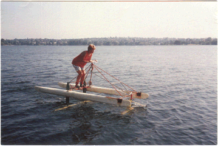

The Pogo FoilA Human Powered Boat with Flapping Wing PropulsionMovie from YouTube |
 |
The Pogo Foil is a human-powered hydrofoil boat with a flapping wing propulsion system. In the photo above, my wife, Molly Knox, is riding/flying it on Green Lake in Seattle in 1990. It weighs about 50 lbs, goes over 11 mph, but is only good for a few hundred meters before the rider/pilot gets tired out. The Pogo Foil is the culmination of several years of experimental boat building, which included the "Mutiny on the Boundary Layer," the overweight over-mechanical, but working, predecessor to the sleeker Pogo Foil.
The boat rests on pontoons at the start, and then the rider starts hopping up and down (hence the "pogo"). The vertical motion causes the main hydrofoil below the pilot to start to make thrust. This main wing is made of a carbon/epoxy composite, is about 2 m in span, uses a NACA 4415 airfoil section, and pivots just ahead of the quarter chord. The pivoting is controlled by a lever arm to a nonlinear spring aboveboard. The springiness controls how much thrust you get. As you gain speed the front, smaller foil pushes the nose of the boat up. When 'flying' the depth of the front foil is controlled by a little spatula on a lever arm which rides along the surface of the water and actuates the elevator flat on the front foil. The front foil is steered by the handlebars, and when you are flying you balance the craft just like a bike. As you gain speed you lean forward, and then in a magical and difficult-to-master moment the craft rotates up, the hulls pull clear of the water, and you are flying. Then your weight is fully carried by the hydrofoils, which remain 10-30 cm below the water surface. It is an amazing feeling to fly the craft, I imagine that it is a bit like a goose feels taking off from a pond and skimming low along the water.
I don't sell them, and it's not patented. A group in Sweden independently invented an almost-identical device called the Trampofoil, not long after mine. They were selling them, but may not be anymore. I was motivated to start working on such devices while I was an aero engineer at AeroVironment, Inc., my dad's company in Monrovia, CA. We were building an 18 ft span flying-flapping pterodactyl replica. I was working with Alec Brooks and Alan Abbott, who created the amazing Flying Fish human-powered hydrofoil. The Pogo Foil is modeled after the Fish, but uses a flapping foil instead of a propeller. Yes, my dad is Paul MacCready who invented the Gossamer Condor and Albatross. We have raced the Pogo Foil and its predecessor at International Human Powered Vehicle Association (IHPVA) races in Vancouver BC and Portland Oregon. I built the earlier boat, the Mutiny, while I was a grad student with Ted Wu at Caltech. Ted has done some great work predicting what sort of flapping motion you need for optimum propulsive efficiency. The Pogo Foil is not very efficient compared to either theory or a propeller. But there is lots of room for improvement by motivated inventors and scientists! Nature has much to teach us.
REFERENCES
- MacCready, P. 1986: Features of Flapping-Wing Propulsion. Third International Human Powered Vehicle Scientific Symposium, Proceedings, A. Abbott, ed., IHPVA, Seal Beach, CA, USA, 45-52.
- MacCready, P. 1990: Hydrofoil Boats with Flapping-Wing Propulsion. Human Power, 8, no. 1, 9-16.